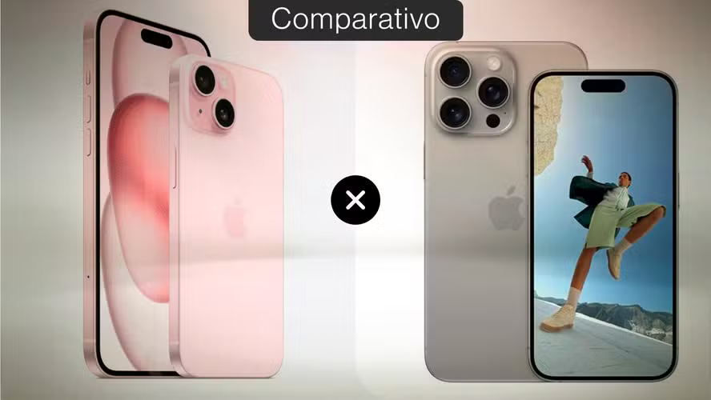

iPhone 15 vs iPhone 15 Pro: saiba o que muda entre celulares
Postado 04 outubro 2024

O iPhone 15 e o iPhone 15 Pro são celulares da Apple lançados em setembro de 2023 e, apesar das semelhanças, carregam algumas diferenças importantes. A geração desses smartphones trouxe novidades como a chegada da entrada USB-C para carregamento e a tela Super Retina XDR de 6,1 polegadas e, até hoje, ambos podem ser atualizados para o iOS 18, versão mais recente da Apple. Ainda assim, o iPhone 15 e o iPhone 15 Pro diferem em alguns pontos, como em processamento, câmera e memória RAM.
O iPhone 15 foi lançado por um valor sugerido de R$ 7.299, com o passar do tempo, o preço caiu, e o dispositivo já pode ser adquirido a partir de R$ 4.779, na Amazon. Já o iPhone 15 Pro chegou ao mercado custando R$ 9.299, mas hoje em dia pode ser adquirido por preços que partem de R$ 8.369, também na Amazon. A seguir, confira o comparativo feito pelo TechTudo e saiba o que muda entre o iPhone 15 e o iPhone 15 Pro.
iPhone 15 x iPhone 15 Pro: compare as especificidades dos celulares
| Especificações |
iPhone 15 |
iPhone 15 Pro |
| Lançamento |
Setembro de 2023 |
Setembro de 2023 |
| Preço de lançamento |
A partir de R$ 7.299 |
A partir de R$ 9.299 |
| Preço atual |
A partir de R$ 4.779 |
A partir de R$ 6.835 |
| Tamanho da tela |
6,1 polegadas |
6,1 polegadas |
| Resolução |
FHD+ (2.556 x 1.179 pixels) |
FHD+ (2.556 x 1.179 pixels) |
| Processador |
Apple A16 Bionic |
A17 Pro |
| Memória RAM |
6 GB (estimativa) |
8 GB (estimativa) |
| Armazenamento |
128 GB, 256 GB e 512 GB |
128 GB, 256 GB, 512 GB ou 1 TB |
| Cartão de Memória |
Não |
Não |
| Câmera traseira |
Dupla, 48 MP e 12 MP |
Tripla, 48 MP + 12 MP + 12 MP |
| Câmera frontal |
12 MP |
12 MP |
| Sistema Operacional |
iOS 17 |
iOS 17 |
| Bateria |
Não informado |
Não informado |
| Dimensões e peso |
147,6 x 71,6 x 7,80 mm; 171 gramas |
146,6 x 70,6 x 8,25 mm; 187 gramas |
| Cores disponíveis |
Preto, azul, verde, amarelo e rosa |
Titânio preto, titânio branco, titânio azul e titânio natural |
Voltar